17 Oscillations
Simple harmonic motion, energy, damping, forced oscillations and resonance
Learning objectives
By the end of this chapter, you should be able to:
- define displacement, amplitude, period, frequency, angular frequency and phase difference;
- use \(T=1/f=2\pi/\omega\);
- recognise simple harmonic motion from the direction and magnitude of acceleration;
- use the equations for displacement, velocity and acceleration in SHM;
- interpret displacement-time, velocity-time and acceleration-time graphs;
- describe the interchange of kinetic and potential energy during SHM;
- use \(E=\tfrac12m\omega^2x_0^2\);
- explain damping and distinguish light, critical and heavy damping;
- explain forced oscillations and resonance in terms of driving and natural frequency.
17.1 Simple harmonic motion
Describing an oscillation
An oscillation is a repetitive variation with time of the displacement of an object about an equilibrium position. At the equilibrium position, the resultant force on the object is zero.
| Quantity | Meaning | Unit |
|---|---|---|
| displacement, \(x\) | directed distance from the equilibrium position | m |
| amplitude, \(x_0\) | maximum magnitude of displacement | m |
| period, \(T\) | time for one complete oscillation | s |
| frequency, \(f\) | number of complete oscillations per unit time | Hz |
| angular frequency, \(\omega\) | rate of change of phase angle | rad s\(^{-1}\) |
The period, frequency and angular frequency are related by
\[T=\frac{1}{f}=\frac{2\pi}{\omega}, \qquad \omega=2\pi f.\]
Phase and phase difference
One complete oscillation corresponds to a phase change of \(2\pi\) rad or \(360^\circ\). Phase difference describes how far one oscillation leads or lags another oscillation of the same frequency.
If corresponding points are separated by a time interval \(\Delta t\),
\[\phi=2\pi\frac{\Delta t}{T}=2\pi f\Delta t.\]
Oscillations with coincident maxima and minima are in phase. A maximum of one aligned with a minimum of the other gives antiphase: \(\phi=\pi\) rad.
Defining condition for SHM
Simple harmonic motion occurs when acceleration is directly proportional to displacement from equilibrium and acts in the opposite direction:
\[a=-\omega^2x.\]
The minus sign is essential: acceleration and the restoring force always point towards equilibrium. A graph of \(a\) against \(x\) is therefore a straight line through the origin with gradient
\[\frac{a}{x}=-\omega^2.\]
The magnitude of acceleration is zero at equilibrium and greatest at the two extreme positions.
Displacement as a function of time
For an oscillator that passes through equilibrium at \(t=0\) and initially moves in the positive direction,
\[x=x_0\sin(\omega t).\]
For an oscillator that starts at positive maximum displacement,
\[x=x_0\cos(\omega t).\]
More generally, an initial phase may be included: \(x=x_0\sin(\omega t+\phi_0)\). Always identify the starting position and initial direction before choosing a sine or cosine form.
Velocity and speed
For \(x=x_0\sin(\omega t)\),
\[v=v_0\cos(\omega t), \qquad v_0=\omega x_0.\]
Eliminating time gives
\[v=\pm\omega\sqrt{x_0^2-x^2}.\]
The sign gives the direction of motion. The speed is greatest at equilibrium, where \(|v|=\omega x_0\), and zero at \(x=\pm x_0\).
Reading SHM graphs
- Displacement, velocity and acceleration all have the same period in undamped SHM.
- Velocity leads displacement by \(\pi/2\) rad for the sine-form displacement above.
- Acceleration is in antiphase with displacement because \(a=-\omega^2x\).
- The gradient of an \(x\)-\(t\) graph gives velocity.
- The gradient of a \(v\)-\(t\) graph gives acceleration.
- At maximum displacement, \(v=0\) and \(|a|\) is maximum.
- At equilibrium, \(x=0\) and \(a=0\), while \(|v|\) is maximum.
The starting point of a graph is not fixed: it depends on the phase at \(t=0\).
17.2 Energy in simple harmonic motion
Energy interchange
In an undamped oscillator, energy continually changes between kinetic energy and potential energy while total mechanical energy remains constant.
- At \(x=0\): speed and kinetic energy are maximum; potential energy is minimum.
- At \(x=\pm x_0\): speed and kinetic energy are zero; potential energy is maximum.
- Between these positions: one form increases while the other decreases.
For a spring oscillator, the potential energy measured from equilibrium is proportional to \(x^2\). Kinetic and potential energy are never negative and each completes two cycles during one displacement cycle.
Total, potential and kinetic energy
The constant total energy of an undamped simple harmonic oscillator is
\[E=\frac12m\omega^2x_0^2.\]
At displacement \(x\),
\[E_{\mathrm{p}}=\frac12m\omega^2x^2,\]
\[E_{\mathrm{k}}=E-E_{\mathrm{p}}=\frac12m\omega^2(x_0^2-x^2).\]
These equations are consistent with \(E_{\mathrm{k}}=\tfrac12mv^2\) and \(v^2=\omega^2(x_0^2-x^2)\).
17.3 Damping, forced oscillations and resonance
Damping
Damping is the reduction in the energy and amplitude of oscillations due to resistive forces. A resistive force opposes velocity and transfers mechanical energy from the oscillator to the surroundings. Do not confuse it with the restoring force, which points towards equilibrium and produces the oscillation.
For light damping, amplitude decreases approximately exponentially while the system continues to oscillate. The period is often treated as approximately constant in syllabus problems.
Three damping regimes
| Regime | Motion after displacement |
|---|---|
| light damping | oscillates about equilibrium with gradually decreasing amplitude |
| critical damping | returns to equilibrium in the shortest possible time without oscillating |
| heavy damping | returns to equilibrium without oscillating, but more slowly than critical damping |
Critical damping is useful when a system must settle quickly, such as a vehicle suspension or measuring instrument. Heavy damping avoids overshoot but gives a slower response.
Forced oscillations
A free oscillator vibrates at its natural frequency. When an external periodic force acts, the system undergoes forced oscillations at the driving frequency of that force.
The driver transfers energy to the oscillator. The steady amplitude depends on the driving frequency and on damping: greater damping generally lowers and broadens the resonance peak.
Resonance
Resonance occurs when the driving frequency equals the natural frequency of the oscillator. Energy transfer from the driver is then most effective and the steady oscillation amplitude is maximum.
Useful resonance includes acoustic instruments and piezoelectric ultrasound transducers. Unwanted resonance can produce large structural vibrations; its effects may be reduced by increasing damping, changing the natural frequency or adding structural reinforcement.
Structured Questions
17.1 Simple Harmonic Motion - Easy
Example 1 · Definitions and the oscillating pendulum · 17.1 SQ Easy Q1
(a) Define an oscillation. [2 marks]
(b) Identify the correct definition by drawing lines between the properties of oscillations and their definition. [5 marks]
| Properties of oscillations | Definition of properties |
|---|---|
| Displacement | The rate of change of angular displacement with respect to time |
| Amplitude | The distance of an oscillator from its equilibrium position |
| Angular frequency | The time taken for one complete oscillation |
| Frequency | The maximum displacement of an oscillator from its equilibrium position |
| Time period | The number of oscillations per unit time |
(c) Define simple harmonic oscillation. [3 marks]
(d) Use the words in the box below to correctly label the diagram of an oscillating pendulum in Fig. 1.1. [4 marks]
displacement of mass · mass · acceleration · restoring force · equilibrium position
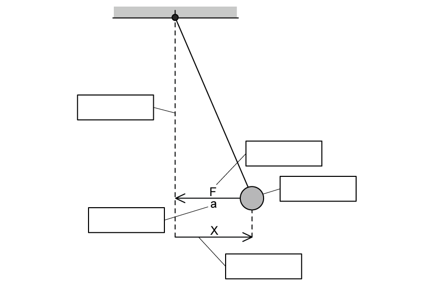
Show mark scheme / model answer
(a)
- Repeated back-and-forth movements
[1] - on either side of an equilibrium position.
[1]
(b)
| Property | Correct definition |
|---|---|
| Displacement | The distance of an oscillator from its equilibrium position |
| Amplitude | The maximum displacement of an oscillator from its equilibrium position |
| Angular frequency | The rate of change of angular displacement with respect to time |
| Frequency | The number of oscillations per unit time |
| Time period | The time taken for one complete oscillation |
- One mark for each correct match.
[5]
(c)
- A type of oscillation in which the acceleration of a body
[1] - is proportional to its displacement
[1] - but acts in the opposite direction.
[1]
(d)
- Equilibrium position: the central vertical dashed line.
- Mass: the pendulum bob.
- Restoring force: the arrow labelled \(F\) directed towards equilibrium.
- Acceleration: the arrow labelled \(a\) directed towards equilibrium.
- Displacement of mass: the horizontal distance labelled \(x\) from equilibrium to the bob.
[4 marks in the supplied PDF]
Example 2 · Equations and graphs of SHM · 17.1 SQ Easy Q2
(a) Identify by drawing a circle around the equation that defines simple harmonic motion and its two solutions. [3 marks]
| \(v=f\lambda\) | \(\omega=\dfrac{2\pi}{T}\) | \(x=x_0\sin(\omega t)\) |
| \(x=x_0\cos(\omega t)\) | \(a=-\omega^2x\) | \(f=\dfrac{1}{T}\) |
(b) The graph in Fig. 1.1 shows that the acceleration of an object is directly proportional to the negative displacement.
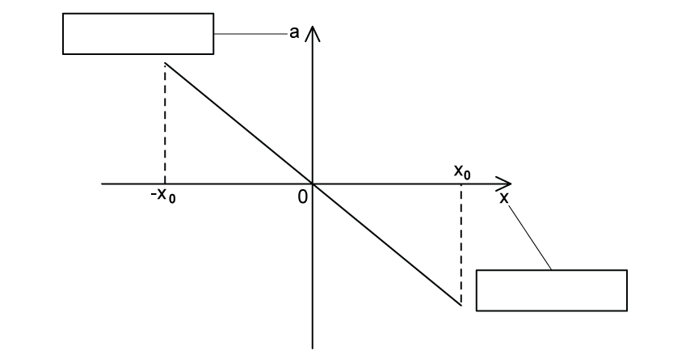
Label the two axes of the graph on Fig. 1.1. [2 marks]
(c) The graphs in Fig. 1.3 show an oscillator starting at the equilibrium position and an oscillator starting at the maximum displacement.
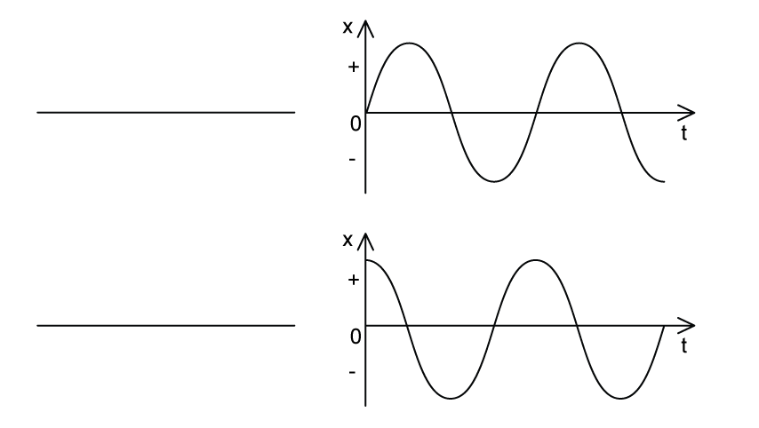
Identify by writing next to the graphs on Fig. 1.3 the correct name of the starting position of the oscillator. [2 marks]
(d) The equation below defines how the speed of an oscillator changes with the displacement of the oscillator.
\[v=\pm\omega\sqrt{x_0^2-x^2}\]
Identify the variables in the equation by stating the variable and the quantity it represents in the space below. [4 marks]
Show mark scheme / model answer
(a) Circle:
- \(a=-\omega^2x\) — the defining equation.
[1] - \(x=x_0\sin(\omega t)\).
[1] - \(x=x_0\cos(\omega t)\).
[1]
(b)
- Horizontal axis: displacement.
[1] - Vertical axis: acceleration.
[1]
(c)
- Top graph: starting at the equilibrium position.
[1] - Bottom graph: starting at the maximum displacement.
[1]
(d)
- \(v\): speed of the oscillator.
[1] - \(\omega\): angular frequency of oscillation.
[1] - \(x_0\): amplitude of oscillation.
[1] - \(x\): displacement of the oscillator.
[1]
Example 3 · SHM graph relationships and energy · 17.1 SQ Easy Q3
(a) Complete the gaps, using the words from the box, in the sentences that describe the relationship between the simple harmonic motion graphs. [5 marks]
cosine · sine · identical · motion · displacement · \(45^\circ\) · \(90^\circ\) · velocity
The displacement-time graph is a curve identical to a __________ graph when the oscillator starts from its equilibrium position.
Velocity is the rate of change of __________.
The velocity-time graph is __________ out of phase with the displacement-time graph.
Acceleration is the rate of change of __________.
The acceleration-time graph is __________ to the displacement graph except reflected on the \(x\)-axis.
(b) State the equation for the total energy of a simple harmonic system. [1 mark]
(c) Fig. 1.1 shows the graph of potential, kinetic and total energy of a simple harmonic system for half a period of simple harmonic oscillation.
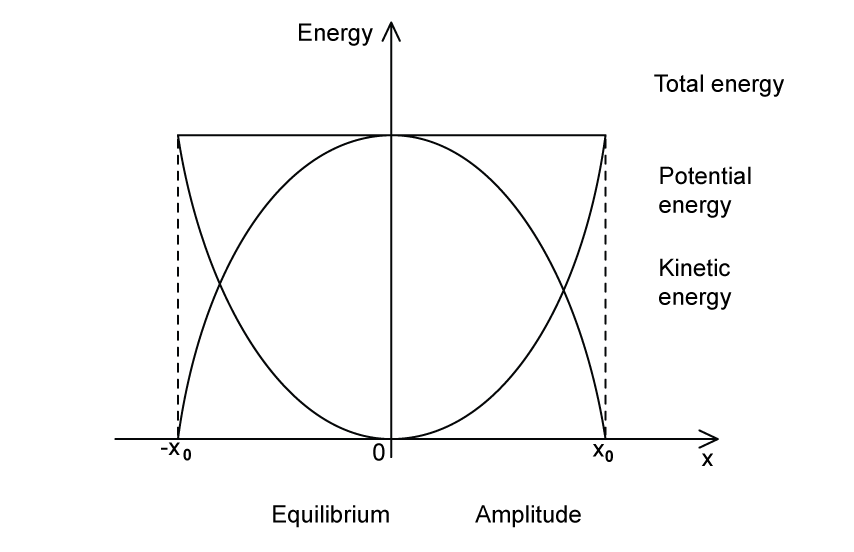
Match the labels to the correct place on the graph by drawing a line between them. [5 marks]
(d) Identify, by placing a tick (\(\checkmark\)) next to, the correct statements about the key features of the displacement-time graph. [2 marks]
| Possible statements about the displacement-time graphs | Tick if correct |
|---|---|
| The amplitude of oscillations \(x_0\) can be found from the maximum value of \(x\). | |
| If the oscillations start at the positive or negative amplitude, the displacement will be at its minimum. | |
| The time period of oscillations \(T\) can be found from reading the time taken for one full cycle. | |
| The graph always starts at 0. |
Show mark scheme / model answer
(a)
- sine
[1] - displacement
[1] - \(90^\circ\)
[1] - velocity
[1] - identical
[1]
(b)
- \(E=\dfrac12m\omega^2x_0^2\).
[1]
(c)
- Total energy: the horizontal line.
[1] - Potential energy: the U-shaped curve.
[1] - Kinetic energy: the inverted U-shaped curve.
[1] - Equilibrium: \(x=0\).
[1] - Amplitude: \(x=x_0\) or \(x=-x_0\).
[1]
(d) Tick:
- The amplitude of oscillations \(x_0\) can be found from the maximum value of \(x\).
[1] - The time period \(T\) can be found from the time taken for one full cycle.
[1]
17.1 Simple Harmonic Motion - Medium
Example 4 · Pendulum acceleration-displacement graph · 17.1 SQ Medium Q1
A pendulum consists of a bob (small plastic sphere) attached to the end of a piece of wire. The other end of the wire is attached to a fixed point. The bob oscillates with small oscillations about its equilibrium position, as shown in Fig. 1.1.
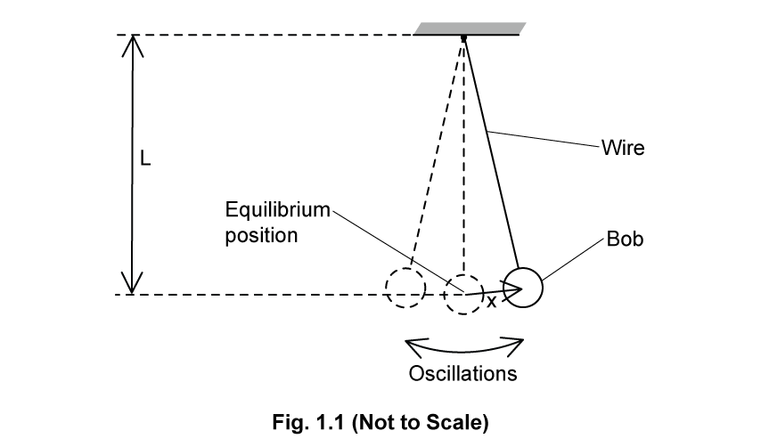
The length \(L\) of the pendulum, measured from the fixed point to the centre of the bob, is \(1.56\ \mathrm{m}\).
The acceleration \(a\) of the bob varies with its displacement \(x\) from the equilibrium position as shown in Fig. 1.2.
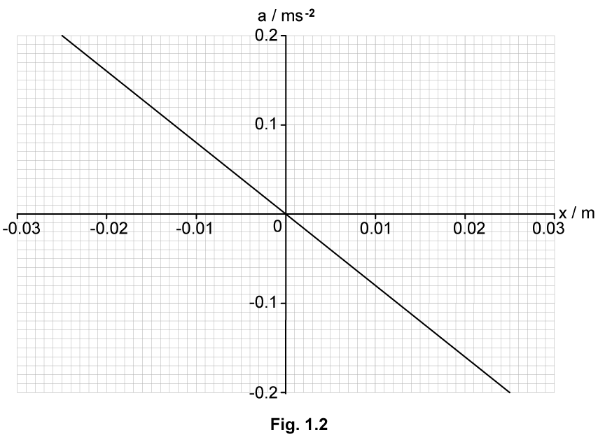
(a) State how Fig. 1.2 shows that the motion of the pendulum is simple harmonic. [2 marks]
(b) Use Fig. 1.2 from (a) to calculate the angular frequency \(\omega\) of the oscillations. [2 marks]
(c) The angular frequency \(\omega\) is related to the length \(L\) of the pendulum by
\[\omega=\sqrt{\frac{k}{L}}\]
where \(k\) is a constant.
Use your answer from (b) to determine \(k\). Give a unit for your answer. [2 marks]
(d) Whilst the pendulum is oscillating, the length of the string is decreased in such a way that the total energy of the oscillations remains constant.
Suggest and explain the qualitative effect of this change on the amplitude of the oscillations. [2 marks]
Show mark scheme / model answer
(a)
- The graph is a straight line through the origin, so \(a\) is proportional to \(x\).
[1] - Its gradient is negative, so acceleration acts in the opposite direction to displacement.
[1]
(b)
- Using \((0,0)\) and \((0.025,-0.20)\), the gradient is \(-0.20/0.025=-8.0\ \mathrm{s^{-2}}\). Since gradient \(=-\omega^2\),
[1] - \(\omega=\sqrt{8.0}=2.83\ \mathrm{rad\ s^{-1}}\).
[1]
(c)
- \(k=\omega^2L\).
[1] - \(k=(2.83)^2(1.56)=12.5\ \mathrm{m\ s^{-2}}\).
[1]
(d)
- Decreasing \(L\) causes \(\omega\) to increase.
[1] - Since \(E=\tfrac12m\omega^2x_0^2\) remains constant, the amplitude \(x_0\) decreases.
[1]
Example 5 · Spring oscillator velocity-displacement graph · 17.1 SQ Medium Q2
(a) An object is suspended from a spring that is attached to a fixed point as shown in Fig. 1.1.
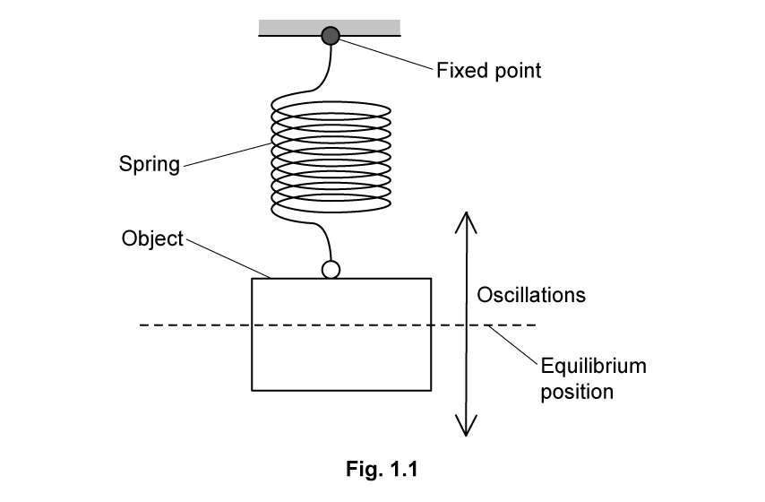
The object oscillates vertically with simple harmonic motion about its equilibrium position.
State the defining equation for simple harmonic motion. Identify the meaning of each of the symbols used to represent physical quantities. [2 marks]
(b) The variation with displacement \(x\) from the equilibrium position of the velocity \(v\) of the object is shown in Fig. 1.2.
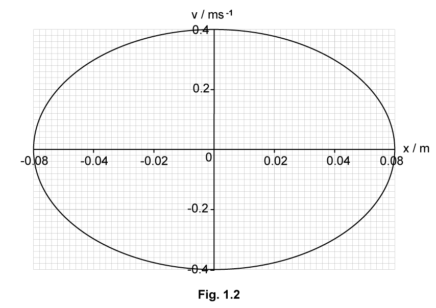
Use Fig. 1.2 to:
(i) determine the amplitude \(x_0\) of the oscillations; [1]
(ii) determine the angular frequency \(\omega\) of the oscillations. [2]
[3 marks]
(c) The oscillations of the object are now heavily damped.
(i) State what is meant by damping. [2]
(ii) Assume that the damping does not change the angular frequency of the oscillations.
On Fig. 1.2, sketch the variation with \(x\) of \(v\) when the amplitude of the oscillations is \(0.03\ \mathrm{m}\). [2]
[4 marks]
Show mark scheme / model answer
(a)
- \(a=-\omega^2x\) is the defining equation.
[1] - \(a\) is acceleration, \(x\) is displacement from equilibrium and \(\omega\) is angular frequency.
[1]
(b)
- (i) \(x_0=0.08\ \mathrm{m}\).
[1] - (ii) The supplied PDF answer selects \((x,v)=(0.08,0)\) and \((0,0.40)\) and states \(\omega=2.24\ \mathrm{rad\ s^{-1}}\).
[2]
Source-consistency warning: using the syllabus equation \(v=\omega\sqrt{x_0^2-x^2}\) at \(x=0\) gives \(\omega=v_{\max}/x_0=0.40/0.08=5.0\ \mathrm{rad\ s^{-1}}\). The value \(2.24\ \mathrm{rad\ s^{-1}}\) printed in the supplied answer is not consistent with the graph or equation.
(c)
- (i) Damping is the loss of total energy of a system
[1]due to resistive forces.[1] - (ii) Following the supplied answer, calculate \(v_{\max}=\omega x_0=2.24(0.03)=0.0672\ \mathrm{m\ s^{-1}}\).
- Draw an open loop starting at either \(x=+0.03\ \mathrm{m}\) or \(x=-0.03\ \mathrm{m}\) and passing through the corresponding maximum speed.
[1] - For heavy damping, the object does not reach the same displacement on the other side; the path returns towards rest at equilibrium with a smaller speed.
[1]
17.2 Damped Oscillations - Medium
Example 6 · Electromagnetic damping of a spring-magnet system · 17.2 SQ Medium Q1
A bar magnet of mass \(250\ \mathrm{g}\) is suspended from the free end of a spring, as illustrated in Fig. 3.1.
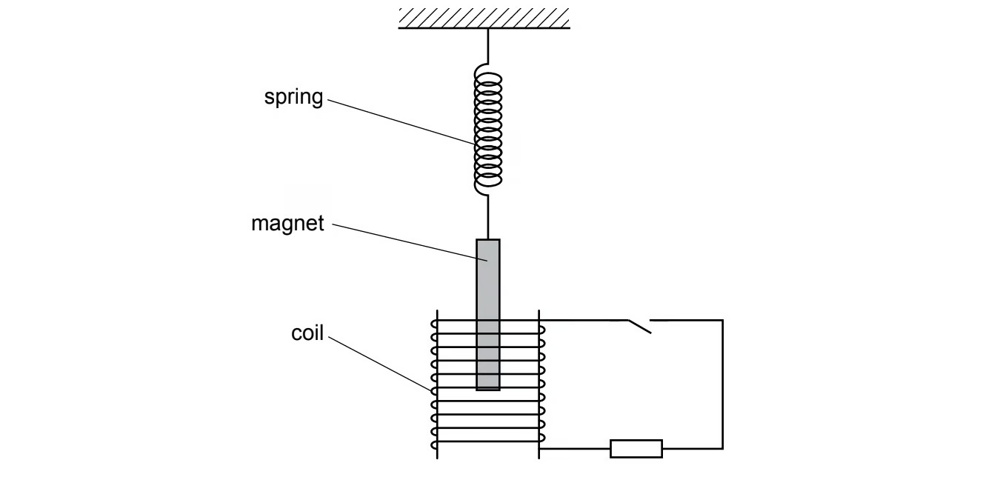
The magnet hangs so that one pole is near the centre of a coil of wire. The coil is connected in series with a resistor and a switch. The switch is open.
The magnet is displaced vertically and then allowed to oscillate.
At time \(t=0\), the magnet is oscillating freely. At time \(t=6.0\ \mathrm{s}\), the switch in the circuit is closed.
The variation with time \(t\) of the vertical displacement \(y\) of the magnet is shown in Fig. 3.2.
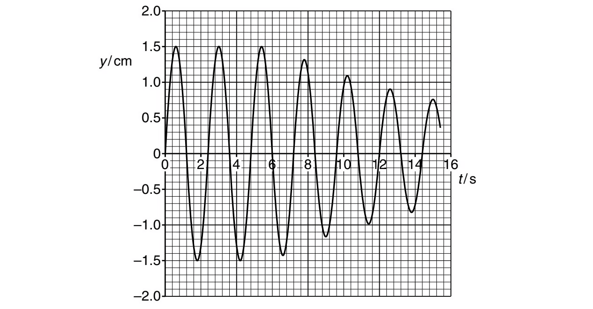
(a) For the oscillating magnet, use data from Fig. 3.2 to determine, to two significant figures:
(i) the frequency \(f\); [2]
(ii) the energy of the oscillations during the time interval \(t=0\) to \(t=6.0\ \mathrm{s}\). [3]
[5 marks]
(b) When the switch is closed, the oscillations are damped.
Explain, with reference to Fig. 3.2, whether this damping is light, critical or heavy. [1 mark]
Show mark scheme / model answer
(a)
- (i) From the graph, \(T=2.4\ \mathrm{s}\).
[1] - \(f=1/T=1/2.4=0.42\ \mathrm{Hz}\).
[1] - (ii) Before \(6.0\ \mathrm{s}\), \(y_0=1.5\ \mathrm{cm}=1.5\times10^{-2}\ \mathrm{m}\).
- Use \(E=\tfrac12m(2\pi f)^2y_0^2\).
[1] - \(E=\tfrac12(250\times10^{-3})(2\pi\times0.42)^2(1.5\times10^{-2})^2\).
[1] - \(E=1.96\times10^{-4}\ \mathrm{J}=2.0\times10^{-4}\ \mathrm{J}\) to two significant figures.
[1]
(b)
- The damping is light because the magnet continues to oscillate while its amplitude gradually decreases.
[1]
Example 7 · Coupled pendulums, resonance and phase difference · 17.2 SQ Medium Q2
(a) Fig. 1.1 shows a light pendulum and a heavy pendulum, both suspended from the same piece of copper wire. This copper wire is secured at each end to fixed points.
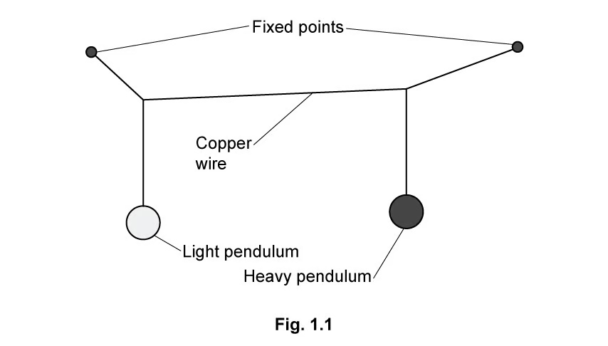
Both pendulums have the same natural frequency.
The heavy pendulum is set to oscillate perpendicular to the plane of the diagram. As it oscillates, it causes the light pendulum to oscillate.
State what is meant by resonance. [2 marks]
(b) Fig. 1.2 shows the variation with time \(t\) of the displacements of the two pendulums for three oscillations.
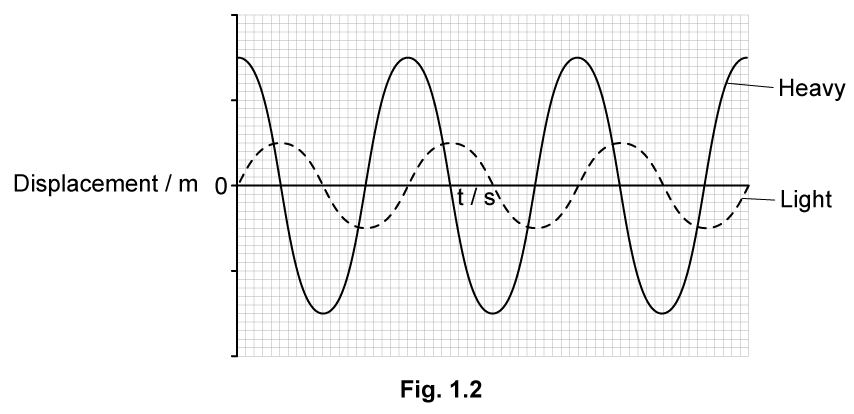
The variation with \(t\) of the displacement \(x\) of the light pendulum is given by
\[x=0.5\sin(2.5\pi t)\]
where \(x\) is in metres and \(t\) is in seconds.
Calculate the frequency, \(f\) of the oscillations. [3 marks]
(c) On Fig. 1.2, label both axes with the correct scales. Use the space below for any additional working that you need. [2 marks]
(d)
(i) Define phase difference, \(\Phi\). [1]
(ii) Determine the magnitude of the phase difference \(\Phi\) between the oscillations of the light and heavy pendulums. Give a unit with your answer. [2]
[3 marks]
Show mark scheme / model answer
(a)
- Resonance is oscillation of an object at maximum amplitude
[1] - when the driving frequency equals the natural frequency of the object.
[1]
(b)
- Comparing with \(x=A\sin(\omega t)\) gives \(\omega=2.5\pi\ \mathrm{rad\ s^{-1}}\).
[1] - \(T=2\pi/\omega=2\pi/(2.5\pi)=0.80\ \mathrm{s}\).
[1] - \(f=1/T=1.25\ \mathrm{Hz}\).
[1]
(c)
- Displacement scale: \(0.5\), \(1.0\), \(1.5\), \(2.0\ \mathrm{m}\).
[1] - Time scale: \(0.4\), \(0.8\), \(1.2\), \(1.6\), \(2.0\), \(2.4\ \mathrm{s}\).
[1]
(d)
- (i) Phase difference describes how far one oscillation is in front of or behind another.
[1] - (ii) \(T=0.80\ \mathrm{s}\) and the graph gives \(\Delta t=0.20\ \mathrm{s}\).
- \(\Phi=2\pi\Delta t/T=2\pi(0.20)/0.80=\pi/2=1.57\ \mathrm{rad}\).
[2]
Example 8 · Forced frequency, natural frequency and resonance · 17.2 SQ Medium Q3
(a) For an oscillating body, state what is meant by:
(i) forced frequency; [1]
(ii) natural frequency of vibration; [1]
(iii) resonance. [2]
[4 marks]
(b) State and explain one situation where resonance is useful. [2 marks]
(c) In some situations, resonance should be avoided.
State one such situation and suggest how the effects of resonance are reduced. [2 marks]
Show mark scheme / model answer
(a)
- (i) Forced frequency is the frequency at which an object is made to vibrate or oscillate.
[1] - (ii) Natural frequency is the frequency at which an object vibrates when free to do so.
[1] - (iii) Resonance is maximum-amplitude vibration
[1]when the forced frequency equals the natural frequency.[1]
(b) One answer given in the supplied PDF is:
- A piezoelectric crystal is made to vibrate at resonance.
[1] - This maximises the amplitude of the ultrasound waves produced.
[1]
Other valid examples require both the vibrating system and an explanation of why resonance is useful.
(c) One answer given in the supplied PDF is:
- Metal panels in a building may vibrate at resonance.
[1] - Strengthening struts can be placed across the panel to reduce the vibrations.
[1]
Chapter self-check
- Can you distinguish displacement, amplitude, period, frequency and phase difference?
- Can you use the gradient of an \(a\)-\(x\) graph to determine \(\omega\)?
- Can you select the correct sine or cosine equation from the initial conditions?
- Can you identify where speed, acceleration, kinetic energy and potential energy are greatest?
- Can you distinguish resistive force from restoring force?
- Can you sketch light, critical and heavy damping correctly?
- Can you explain resonance as efficient energy transfer at equal driving and natural frequencies?